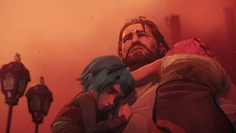
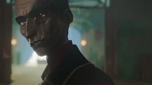
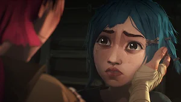

Arcane
Arcane es una aclamada serie animada de Netflix y Riot Games basada en el universo de League of Legends. La historia explora el conflicto de clases entre dos ciudades: la utópica y próspera Piltóver y el opresivo y subterráneo barrio de Zaun. La trama sigue principalmente la trágica separación de dos hermanas huérfanas, Vi y Powder (Jinx), quienes terminan en bandos opuestos.
⭐ Calificación: 9.0/10


Capítulo 1 - Welcome to the Playground
Las hermanas Vi y Powder viven en Zaun y participan en un robo que provoca una serie de consecuencias inesperadas. Mientras tanto, Jayce intenta desarrollar una tecnología capaz de combinar magia y ciencia.

Capítulo 2 - Some Mysteries Are Better Left Unsolved
Jayce enfrenta problemas por sus experimentos con la magia. Las tensiones entre Piltóver y Zaun continúan creciendo mientras Vi intenta proteger a su familia y sus amigos.

Capítulo 3 - The Base Violence Necessary for Change
El enfrentamiento entre Vander y Silco alcanza un punto crítico. Una misión de rescate termina en tragedia y cambia para siempre el destino de Vi y Powder.